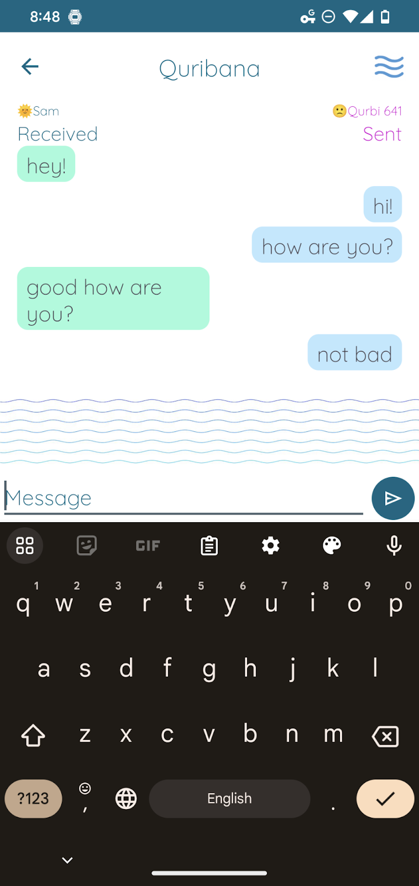

Information Architect
Tech Philosopher


The idea for Quribana was to take everyday moments when people are in a shared space scrolling through their phones and provide them with a means to connect with one another. Using technology, we can take down some of the barriers that might otherwise prevent the interaction by providing affordances such as anonymity and ephemerality. The initial idea was that these affordances might help users feel comfortable disclosing information they might not otherwise have shared and help give them a voice.
In order to determine just how anonymous these interactions should be to facilitate the interaction and respect the privacy and safety of the user, I deployed a survey to understand which features users would want to have in a profile.
In addition to a survey, I conducted unstructured interviews with potential users about the idea to help understand how they perceive the app fitting into their daily life. Responses varied from using the technology at stores and shops, to networking and dating.

Taking this information into consideration I set out to more narrowly frame the design to shape the process going forward. With connection range limited to about 100 meters I decided that facilitating disclosure of important information might not be feasible, but focusing more on simply breaking the ice between two users in a shared space and helping them connect might make more sense. I needed to brainstorm the user flow that would take two people from matching, to viewing profiles to talking with each other, all the while respecting their privacy.
An initial idea was to have two devices pair and immediately be brought to a chat room. While this flow is quick and simple, it cuts out the important step of viewing the user’s profile to choose if you would like to interact with them or not.

I ultimately decided to move forward with a design that would create a list of all possible connections, with the ability to view the user profile before deciding to interact with them. Rather than instantly connecting two users, they can have the important ability to view some basic information about the user before deciding if they would like to chat with them or not.

As a proof of concept and to test the technology, the prototyping began with a low fidelity prototype to facilitate pairing, profile viewing and chatting. After the proof of concept was established, the home page was removed to place the user right into the experience when opening the app.
The chat page seemed like an opportunity to explore designs in an otherwise overlooked space that often just chooses the chat bubbles that we have all become accustomed to. The conventions we always see, like received messages on the left and three dots when the user is typing, can be redesigned to create an experience that matches the intent of the app.

An early iteration took the waves used in the branding to create blocks of wave surrounded messages as the messages come in. Most users suggested that the staggering of the messages, as opposed to a list, was too important to the chat to be overlooked.
The next iteration added staggered messages, resorted to bubbles to help with the contrast but added a unique feature. Only the five most recent messages are displayed. When we are in a real conversation, as the conversation moves on we might forget what someone said a few minutes ago. This design helps mimic a real life conversation. Also, like in real-life, the messages disappear as the more recent ones are displayed, bringing that ephemerality to help users feel safe and comfortable. Moreover, this semantic promotes listening. A user who sends five consecutive messages will actually erase any messages from the second user. The limited screen space promotes pausing to listen to make sure the conversation is two-sided and everyone has a voice.
User testing was carried out using a think aloud protocol on an Android tablet device paired with my phone. Users were tasked with successfully pairing with my device, viewing my profile and chatting with me. Most of these trials involved hiccups with the connection protocol. The switches on the homepage were not intuitive and did not provide what Don Norman would call “knowledge in the world” to help the user figure out how to connect. This led to the addition of a help page (also informed by a heuristic analysis).

In terms of implementation and the comprehensive user experience of the design, the app store listing is a part of the user experience like the box of a physical product. While promotional images and screenshots can showcase the design, there are also opportunities to use the screenshots to help guide the user into the experience and even to serve as a visual reference to help understand the design. User testing revealed some users struggling to understand the nature of the connections or how the app actually works. I took the opportunity to create a set of screenshots that actually serve more of a purpose than getting a glimpse at the app, but also to help explain how it works. I was able to use the promotional images as a kind of explanation and onboarding. There will likely be a large portion of users who discover this app and will not have another device nearby to explore the functionality. It is important to visually demonstrate how the app will function when it is being used in an environment with other users that users can understand the intended functionality, even if there are no other users around when they download the app.